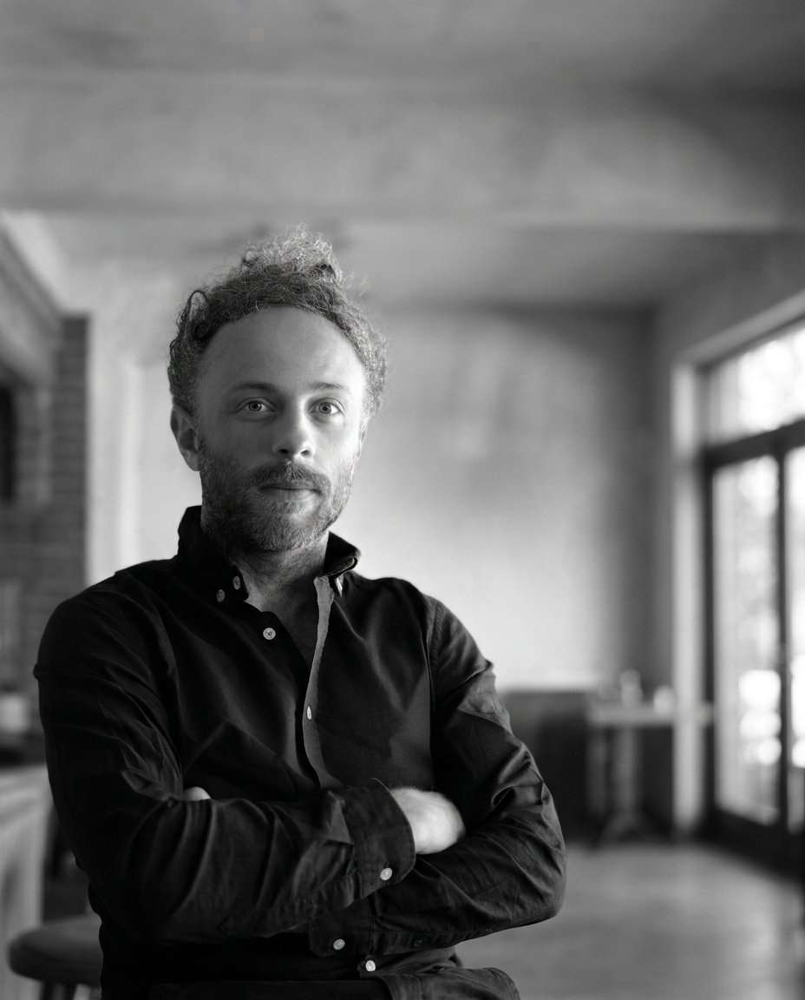

Welcome to WonderLab, a creative thinking and design academy in Hong Kong where young minds think like engineers, experiment like scientists, dare like innovators, and dream like architects. Led by an award-winning architect. Our design challenges build creativity, confidence, and the courage to bring ideas to life.
Approach.
Small cohorts, big thinking
Seven students at most, lead and work as teams, turn curiosity into ideas.
From idea to impact
Ideas become real prototypes, prototypes become solutions.
Designing for the future
Real-world challenges in sustainability and climate resilience.
Curated challenges
In six steps
Every challenge in six steps
01
Brief
A real problem, a clear goal.
02
Sketch
Ideas start on paper.
03
Build
Simple materials, against the clock.
04
Test
Load it. Drop it. Float it.
05
Improve
Refine it and build again.
06
Share
Present, reflect, learn.
Programme.
Across three levels, Explorers, Creators and Changemakers, students tackle 10 design challenges over 20 sessions (one session per week), developing the skills and confidence to create meaningful solutions.
Tutor.

Julien Klisz.
Licensed Architect
WonderLab Founder & Lead Tutor
Julien is an award-winning architect and Design Director at LEAD (Laboratory for Explorative Architecture & Design) in Hong Kong. Through WonderLab, he brings the creative process used by architects and designers into a hands-on learning experience for students, helping them turn curiosity into ideas, ideas into prototypes, and prototypes into solutions.
- Design Director at LEADOversees major projects ranging from cultural buildings and public installations to large-scale urban developments.
- University EducatorHas taught master’s students at CUHK and HKU since 2013.
- Award-winning projectsLed innovative architectural built projects across Asia and the Middle East.
- Venice Architecture BiennaleExhibited at the 12th International Architecture Exhibition in Venice.